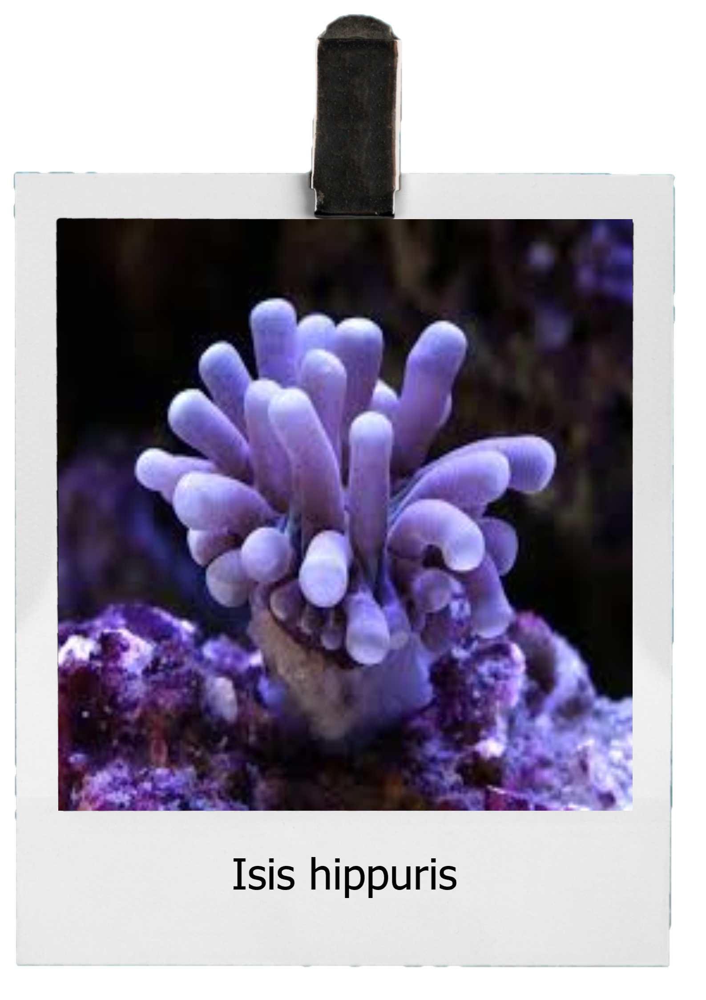
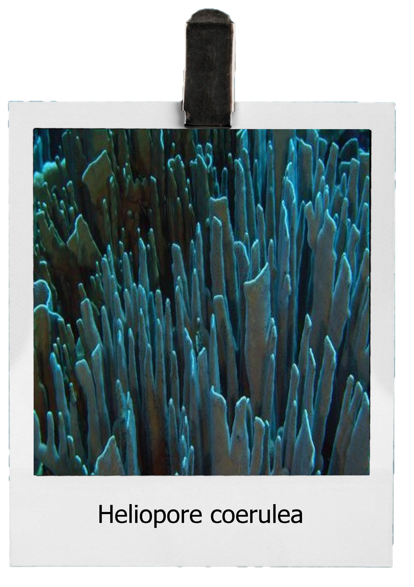
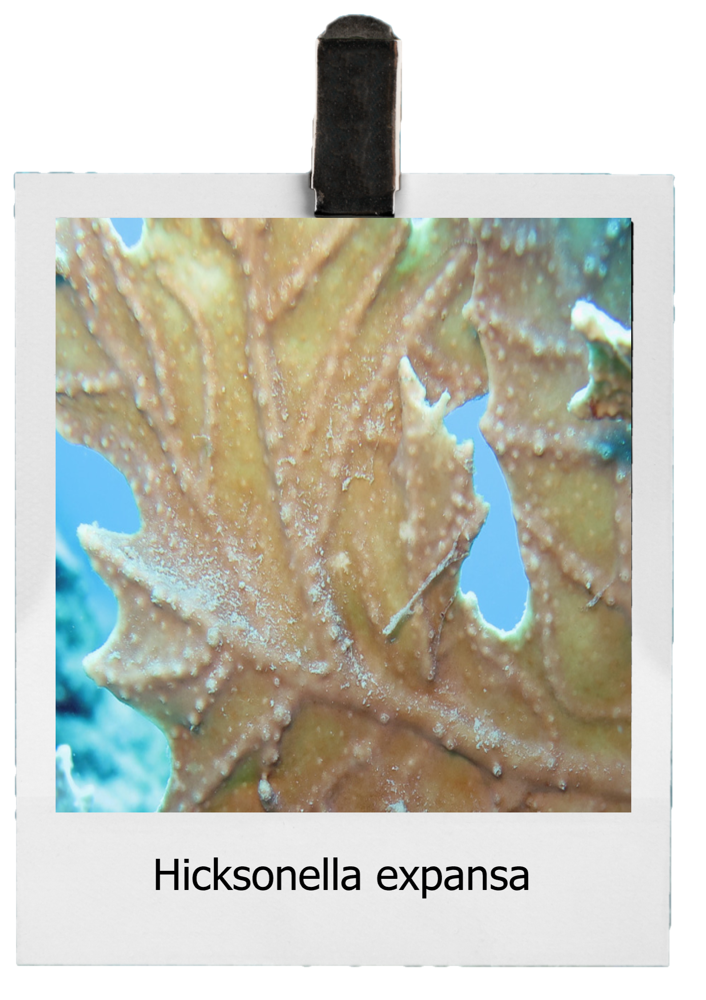
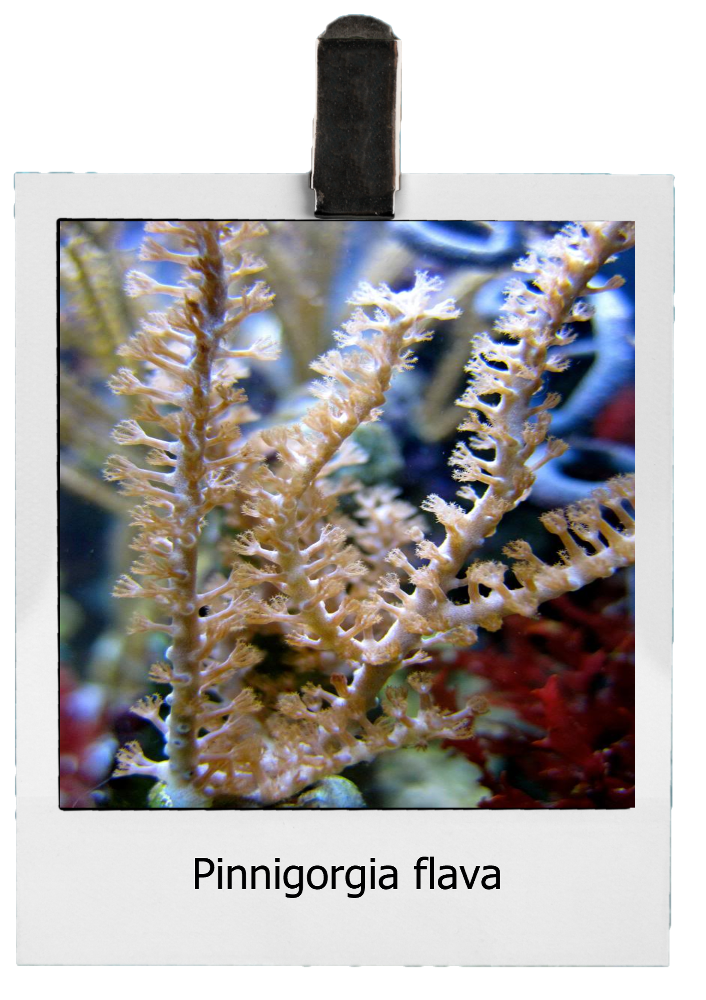

Isis hippuris is a species of bamboo coral found in the Western Pacific
Ocean. It produces hippuristanol, a molecule with apparent anti-cancer functions. Good medicinal
value and weak viability make it very precious.

It is the only octocoral known to produce a massive skeleton.As such, it is
fairly abundant within paleontology, with fossils indicating the species has remained unchanged
since the Cretaceous.

The main characteristics of separating members of different genera are
distinguished by the degree and type of acupuncture. Other judgment features include branching
pattern and whole adult shape.

Pinnigorgia flava is a fast growing gorgonian coral that is a graceful,
thin-branched that can be described as tan to pink in color with similarly colored polyps.